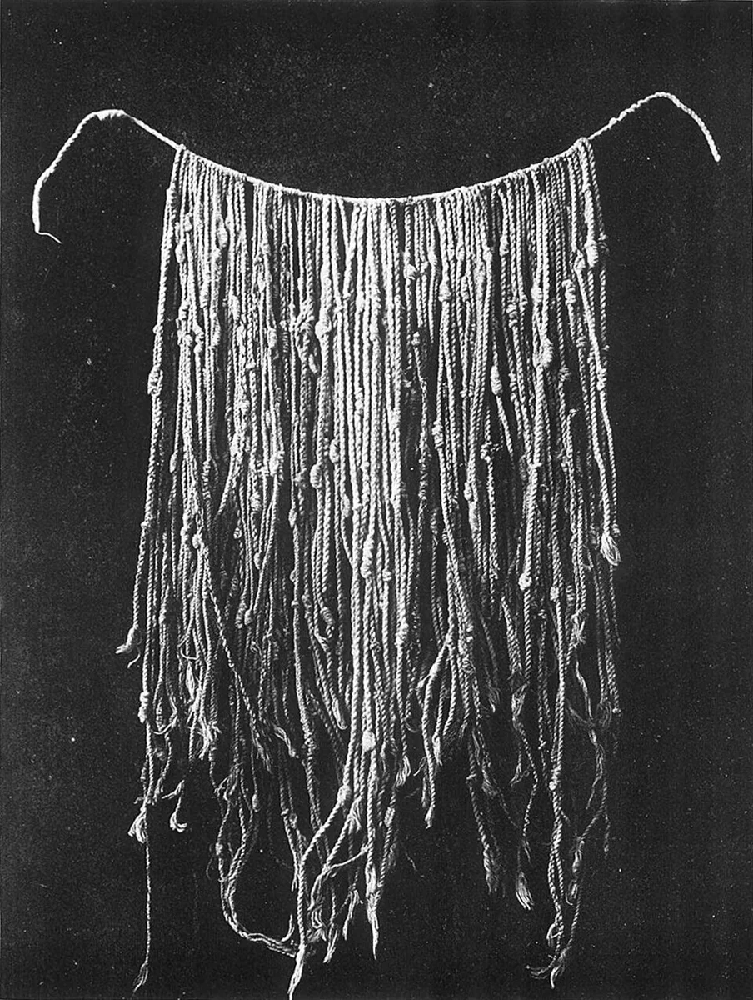

Andean khipus
Choose a pendant or subsidiary cord from KH0125. Inspect its recorded length and attachment in a schematic of the actual cord tree.
Inspect source image

Choose a pendant or subsidiary cord from KH0125. Inspect its recorded length and attachment in a schematic of the actual cord tree.
